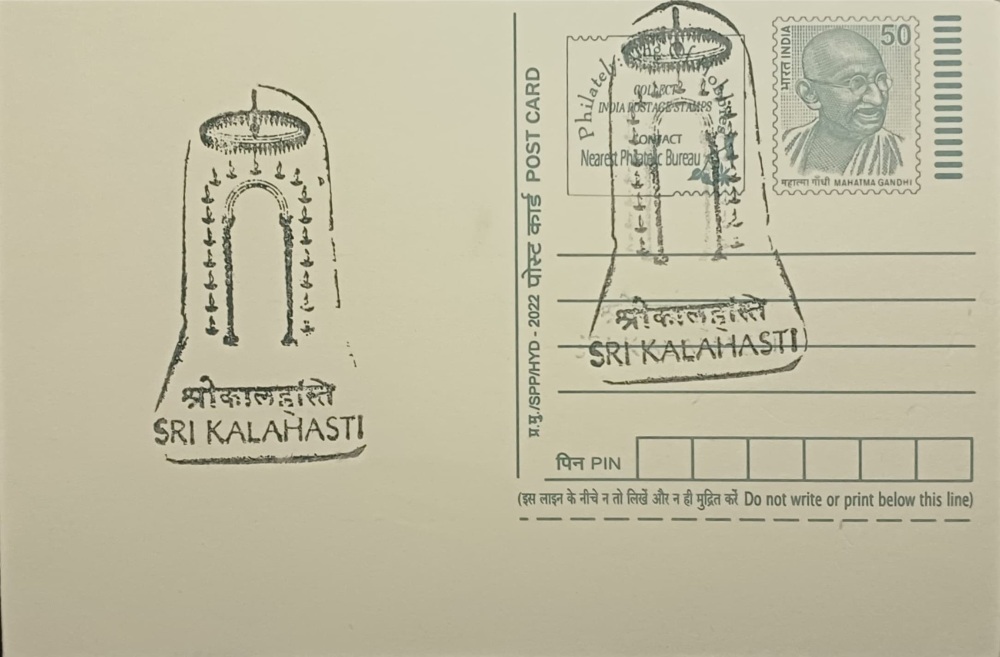

{kind=link}


This list below have 4 categories. Green represents AVAILABLE, Blue/^ represents DOUBTFUL, Orange/% represents REPLACED, and Red/* represents UNAVAILABLE.
| S. NO. | PERMANENT PICTORIAL CANCELLATION | DATE OF INTRODUCTION | POST OFFICE AND RANK | DISTRICT | STATE/UT | PINCODE | IMAGE |
|---|---|---|---|---|---|---|---|
| 1 | Tirumala Gopuram, Sankhu, and Chakra | 14.10.1975 | Tirupati HO | Tirupati | ANDHRA PRADESH | 517501 | |
| 2 | Tallapaka Annamacharya | 06.11.1976 | Tirumala SO | Tirupati | ANDHRA PRADESH | 517504 | |
| 3 | Deity of Sri Kalahasteeswara Swamy | 14.02.1980 | Srikalahasti SO | Tirupati | ANDHRA PRADESH | 517644 |  |
| 4 | Gopuram of Sri Mallikarjuna Swamy Temple | 07.03.1978 | Srisailam SO | Kurnool | ANDHRA PRADESH | 518101 | |
| 5 | Amaravathi Stupa | 11.02.1976 | Amaravathi SO | Guntur | ANDHRA PRADESH | 522020 | |
| 6 | ISRO Radar | 20.04.1976 | Sriharikota Range SO | Tirupati | ANDHRA PRADESH | 524124 | |
| 7 | Dolphin’s Nose Lighthouse | 10.04.1982 | Visakhapatnam HO | Visahapatnam | ANDHRA PRADESH | 530001 | |
| 8 | Ancient Marine Craft from the Legend of Buddha * | 30.09.1975 | Visakhapatnam Shipyard HO | Visahapatnam | ANDHRA PRADESH | 530001 | |
| 9 | Gopuram of Sri Varaha Lakshmi Narasimha Swamy Temple | 25.07.1987 | Simhachalam SO | Visahapatnam | ANDHRA PRADESH | 530028 | |
| 10 | Gopuram of Sri Suryanarayana Swamy Temple | 11.04.2013 | Arasavalli SO | Srikakulam | ANDHRA PRADESH | 532401 | |
| 11 | Gopuram of Sri Kurmanathaswamy Temple ^ | 11.04.2013 | Srikurmam SO | Srikakulam | ANDHRA PRADESH | 532404 | |